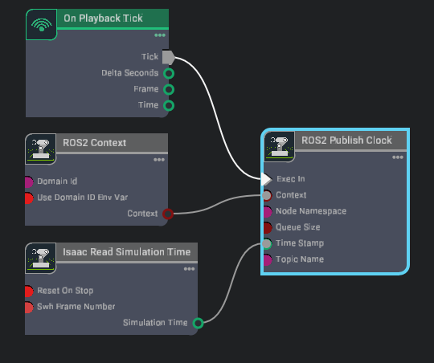

ROS 2 安装#
NVIDIA Isaac Sim 提供了一个 ROS 2 桥接器，用于 ROS 系统集成。模拟器使用同一组通用组件来定义发布和接收的数据类型。
Isaac Sim 支持的 ROS 发行版如下：
平台 |
ROS 发行版 |
ROS 安装说明 |
|---|---|---|
Ubuntu 24.04 |
Jazzy（推荐） |
默认 Linux 安装 |
Ubuntu 22.04 |
Humble |
使用默认安装（Python 3.10）。 使用 ROS 2 工作区的 Python 3.12 构建版本，以便在 Isaac Sim 中使用自定义 ROS 接口。 |
Ubuntu 22.04 |
Jazzy |
从源码构建（Python 3.10）。 使用 ROS 2 工作区的 Python 3.12 构建版本，以便在 Isaac Sim 中使用自定义 ROS 接口。 |
Windows 11 |
Humble |
WSL 安装（已弃用）。不支持自定义 ROS 接口。 |
Windows 11 |
Jazzy |
Pixi：基于 Pixi 的原生 ROS 安装。Isaac Sim 可以直接加载 Pixi ROS 安装。 WSL（已弃用）：不支持自定义 ROS 接口。 |
对于 ROS 2 桥接器，Isaac Sim 兼容 ROS 2 Humble 和 ROS 2 Jazzy。
注意
实验性功能：原生 ROS 2 发行版支持 – Isaac Sim 现在实验性地支持加载在您的平台（Ubuntu 22.04 或 Ubuntu 24.04）上原生安装的任何 ROS 2 发行版。要使用此功能，请在同一终端中加载您本地安装的 ROS 2 发行版并启动 Isaac Sim。虽然 Humble 和 Jazzy 仍然是官方测试和推荐的发行版，但其他原生支持的发行版可能也能通过此工作流运行。
推荐使用 Ubuntu 24.04 上的 ROS 2 Jazzy。请验证或选择您的配置以继续：
ROS 2 设置
注意
默认 ROS 接口使用所选 ROS 安装或 Isaac Sim 内部 ROS 库已提供的标准 ROS 2 消息和服务包。
自定义 ROS 接口使用从您自己的 ROS 2 包生成的消息或服务类型。Isaac Sim 在其 Python 3.12 运行时中加载这些生成的 Python 模块，因此在 Ubuntu 22.04 上构建自定义接口工作区时，也必须使用 Python 3.12。
安装 ROS 2#
按照官方网站上的说明下载 ROS 2 Jazzy：
（可选）运行以下命令在您的系统上安装该包。如果您是从源代码构建 ROS 2，请在重新构建之前克隆该包并将其包含在您的 ROS 2 安装工作区中。如果您不需要运行
vision_msgs发布者，可以跳过此步骤。ROS 2 Bridge 中的某些消息类型（用于发布边界框的Detection2DArray和Detection3DArray）依赖于 vision_msgs_package。sudo apt install ros-jazzy-vision-msgs
（可选）运行以下命令在您的系统上安装该包。如果您是从源代码构建 ROS 2，请在重新构建之前克隆该包并将其包含在您的 ROS 2 安装工作区中。如果您不需要运行
ackermann_msgs发布者/订阅者，可以跳过此步骤。ROS 2 Bridge 中的某些消息类型（AckermannDriveStamped用于发布和订阅 Ackermann 转向命令）依赖于 ackermann_msgs_package。sudo apt install ros-jazzy-ackermann-msgs
确保在终端或您的
~/.bashrc文件中已 source ROS 环境。每次使用任何 ROS 命令之前，都必须执行此步骤。source /opt/ros/jazzy/setup.bash
注意
Ubuntu 24.04 上的 ROS 2 Humble 不是官方支持的配置。请在 Ubuntu 24.04 上使用 ROS 2 Jazzy，或在 Ubuntu 22.04 上使用 ROS 2 Humble。
按照官方网站上的说明下载 ROS 2：
（可选）ROS 2 Bridge 中的某些消息类型（用于发布边界框的 Detection2DArray 和 Detection3DArray）依赖于 vision_msgs_package。运行以下命令在您的系统上安装该包。如果您是从源代码构建 ROS 2，请克隆该包并将其包含在您的 ROS 2 安装工作空间中，然后重新构建。如果您不需要运行
vision_msgs发布者，可以跳过此步骤。sudo apt install ros-humble-vision-msgs
（可选）ROS 2 Bridge 中的某些消息类型（
AckermannDriveStamped，用于发布和订阅 Ackermann 转向命令）依赖于 ackermann_msgs_package。运行以下命令在您的系统上安装该包。如果您是从源代码构建 ROS 2，请在重新构建之前克隆该包并将其包含在您的 ROS 2 安装工作空间中。如果您不需要运行ackermann_msgs发布者或订阅者，可以跳过此步骤。sudo apt install ros-humble-ackermann-msgs
确保在终端中或您的
~/.bashrc文件中加载了 ROS 环境。每次使用任何 ROS 命令之前，都必须执行此步骤：source /opt/ros/humble/setup.bash
注意
在 Linux 上，您不能在运行 Isaac Sim 的同一终端中加载此安装。在运行 Isaac Sim 之前，请使用 Isaac Sim 内部的 ROS 库和 Python 3.12 进行加载。
按照官方网站上的说明，从源代码下载并构建 ROS 2 Jazzy：
（可选）ROS 2 Bridge 中的某些消息类型（
Detection2DArray和Detection3DArray，用于发布边界框）依赖于 vision_msgs_package。请克隆链接的仓库，并在 ROS 工作空间中构建它。如果您不需要运行vision_msgs发布者，可以跳过此步骤。（可选）克隆链接的仓库，并在 ROS 工作空间中构建它。如果您已从源代码构建 ROS 2，请在重新构建之前克隆该包并将其包含在您的 ROS 2 安装工作空间中。如果您不需要运行
ackermann_msgs发布者或订阅者，可以跳过此步骤。ROS 2 Bridge 中的某些消息类型（AckermannDriveStamped，用于发布和订阅 Ackermann 转向命令）依赖于 ackermann_msgs_package。确保在终端中或您的
~/.bashrc文件中加载了 ROS 环境。每次使用任何 ROS 命令之前，都必须执行此步骤：. ~/ros2_jazzy/install/local_setup.bash
注意
在 Linux 上，您不能在运行 Isaac Sim 的同一终端中加载此安装。在运行 Isaac Sim 之前，请使用 Isaac Sim 内部的 ROS 库和 Python 3.12 进行加载。
注意
目前，基于 Pixi 的原生 ROS 2 安装仅支持 ROS 2 Jazzy。请选择 Jazzy 作为您的 ROS 2 发行版，或切换至 WSL2 安装方法以使用 Humble。
使用 WSL2 在 Windows 上运行 ROS 2，该方式通过内部 ROS 2 库与 Isaac Sim ROS Bridge 进行通信。
在您的 Windows 机器上安装 WSL2。
以管理员权限打开 PowerShell，并将 WSL 版本更改为 2。
wsl --set-default-version 2
在 WSL 中安装 Ubuntu 22.04 发行版。
wsl --install -d Ubuntu-22.04
安装完成后，重启计算机并在 Windows 中打开 Ubuntu 22.04 应用。安装过程需要几分钟时间。
注意
如果在启用虚拟化时遇到错误，请遵循 Windows 虚拟化启用指南。
在 WSL2 中安装 Ubuntu 22.04 后，请按照官方网站上的说明下载 ROS 2：
（可选）ROS 2 Bridge 中的某些消息类型（
Detection2DArray和Detection3DArray，用于发布边界框）依赖于 vision_msgs_package。运行以下命令在您的系统上安装该包。如果您是从源代码构建 ROS 2，请在重新构建之前克隆该包并将其包含在您的 ROS 2 安装工作空间中。如果您不需要运行vision_msgs发布者，可以跳过此步骤。sudo apt install ros-humble-vision-msgs
（可选）ROS 2 Bridge 中的某些消息类型（
AckermannDriveStamped，用于发布和订阅 Ackermann 转向命令）依赖于 ackermann_msgs_package。运行以下命令在您的系统上安装该包。如果您是从源代码构建 ROS 2，请在重新构建之前克隆该包并将其包含在您的 ROS 2 安装工作空间中。如果您不需要运行ackermann_msgs发布者或订阅者，可以跳过此步骤。sudo apt install ros-humble-ackermann-msgs
确保在终端或您的 WSL2
~/.bashrc文件中加载了 ROS 环境。每次使用任何 ROS 命令之前，都必须执行此步骤：source /opt/ros/humble/setup.bash
ROS 2 安装完成后，打开 WSL2 并运行以下命令以获取 WSL2 的 IP 地址：
hostname -I
以管理员身份打开 Powershell 并运行以下命令以获取 Windows 主机的 IPv4 地址：
ipconfig /all
在 Powershell 中根据相应的 IP 地址设置变量：
$Windows_IP = "<WINDOWS_IP>" $WSL2_IP = "<WSL2_IP>"
在 Powershell 中为 ROS 中默认 DDS (FastDDS) 使用的特定端口设置端口转发：
netsh interface portproxy add v4tov4 listenport=7400 listenaddress=$Windows_IP connectport=7400 connectaddress=$WSL2_IP netsh interface portproxy add v4tov4 listenport=7410 listenaddress=$Windows_IP connectport=7410 connectaddress=$WSL2_IP netsh interface portproxy add v4tov4 listenport=9387 listenaddress=$Windows_IP connectport=9387 connectaddress=$WSL2_IP
在 Isaac Sim 中启用 ROS Bridge 并应用 Windows 网络设置后，Isaac Sim 即可与 WSL2 中的 ROS 2 节点进行通信。
使用 WSL2 在 Windows 上运行 ROS 2，该方式通过内部 ROS 2 库与 Isaac Sim ROS Bridge 进行通信。
在您的 Windows 机器上安装 WSL2。
以管理员权限打开 PowerShell，并将 WSL 版本更改为 2。
wsl --set-default-version 2
在 WSL 中安装 Ubuntu 24.04 发行版。
wsl --install -d Ubuntu-24.04
安装完成后，重启机器并在 Windows 中打开 Ubuntu 24.04 应用。安装需要一些时间。
注意
如果在启用虚拟化时遇到错误，请遵循 Windows 虚拟化启用说明。
在 WSL2 中安装 Ubuntu 24.04 后，请按照官方网站上的说明下载 ROS 2：
（可选）ROS 2 Bridge 中的某些消息类型（
Detection2DArray和Detection3DArray，用于发布边界框）依赖于 vision_msgs_package。运行以下命令在您的系统上安装该包。如果您是从源代码构建 ROS 2，请在重新构建之前克隆该包并将其包含在您的 ROS 2 安装工作空间中。如果您不需要运行vision_msgs发布者，可以跳过此步骤。sudo apt install ros-jazzy-vision-msgs
（可选）ROS 2 Bridge 中的某些消息类型（
AckermannDriveStamped，用于发布和订阅 Ackermann 转向命令）依赖于 ackermann_msgs_package。运行以下命令在您的系统上安装该包。如果您是从源代码构建 ROS 2，请在重新构建之前克隆该包并将其包含在您的 ROS 2 安装工作空间中。如果您不需要运行ackermann_msgs发布者或订阅者，可以跳过此步骤。sudo apt install ros-jazzy-ackermann-msgs
确保在终端或您的 WSL2
~/.bashrc文件中加载了 ROS 环境。每次使用任何 ROS 命令之前，都必须执行此步骤：source /opt/ros/jazzy/setup.bash
ROS 2 安装完成后，打开 WSL2 并运行以下命令以获取 WSL2 的 IP 地址：
hostname -I
以管理员身份打开 Powershell 并运行以下命令以获取 Windows 主机的 IPv4 地址：
ipconfig /all
在 Powershell 中根据相应的 IP 地址设置变量：
$Windows_IP = "<WINDOWS_IP>" $WSL2_IP = "<WSL2_IP>"
在 Powershell 中为 ROS 中默认 DDS (FastDDS) 使用的特定端口设置端口转发：
netsh interface portproxy add v4tov4 listenport=7400 listenaddress=$Windows_IP connectport=7400 connectaddress=$WSL2_IP netsh interface portproxy add v4tov4 listenport=7410 listenaddress=$Windows_IP connectport=7410 connectaddress=$WSL2_IP netsh interface portproxy add v4tov4 listenport=9387 listenaddress=$Windows_IP connectport=9387 connectaddress=$WSL2_IP
在 Isaac Sim 中启用 ROS Bridge 并应用 Windows 网络设置后，Isaac Sim 即可与 WSL2 中的 ROS 2 节点进行通信。
Pixi 工作区通过 RoboStack conda 包在 Windows 上原生安装 ROS 2 Jazzy。无需使用 WSL2，且支持所有 Isaac Sim ROS 2 教程。
ROS 2 Jazzy 作为 Pixi 工作区的一部分自动安装。无需单独安装 ROS 2。在继续进行工作区设置之前，请确保满足以下先决条件：
要求 |
备注 |
|---|---|
Windows 11 x64 |
|
|
|
克隆工作区仓库所需。 |
|
MSVC Build Tools 2022 |
选择“使用 C++ 的桌面开发”工作负载。源代码构建所需。若要获取特定的 VS 2022，请滚动到 Visual Studio 下载页面 的“较旧版本下载”部分，并展开 2022。 |
请按照工作站设置中的说明安装独立的 Isaac Sim 包。Pixi 工作区期望其位于 |
继续前往 Isaac Sim ROS 工作区 以克隆并设置 Pixi 工作区。
若要安装 ROS 2 工作区并运行我们的教程，请按照 Isaac Sim ROS 工作区 部分中的步骤操作。
Isaac Sim ROS 工作区#
ROS 2 工作区包含运行我们的 ROS 2 教程和示例所需的包。
包含的 ROS 2 包#
为 NVIDIA Isaac Sim 创建的示例 ROS 2 包列表：
carter_navigation：包含 NVIDIA Carter 机器人所需的启动文件和 ROS 2 导航参数。
cmdvel_to_ackermann：包含用于将命令速度消息（Twist 消息类型）转换为 Ackermann Drive 消息（
AckermannDriveStamped消息类型）的脚本文件和启动文件。custom_message：包含 NVIDIA Carter 机器人所需的启动文件和 ROS 2 导航参数。
h1_fullbody_controller：包含运行 H1 人形机器人全身控制器所需的启动文件、参数和脚本。
isaac_compressed_image_decoder：包含一个解码器节点，用于自动发现 H.264 或 HEVC 压缩图像话题（
sensor_msgs/CompressedImage），并使用 PyAV 将其转换回原始sensor_msgs/Image消息。isaac_moveit：包含用于在 Isaac Sim 中运行 MoveIt2 堆栈的启动文件和参数。
isaac_ros_navigation_goal：用于在 ROS 2 Navigation 中自动设置随机或用户定义的目标位姿。
isaac_ros2_messages：一组自定义的 ROS 2 服务接口，用于检索位姿以及列出 prims 并操作其属性。
isaacsim_bringup：包含用于运行和启动 Isaac Sim 作为 ROS 2 节点的启动文件和脚本。
isaac_tutorials：包含教程系列所需的启动文件、RViz2 配置文件和脚本。
iw_hub_navigation：包含 iw.hub 机器人所需的启动文件和 ROS 2 导航参数。
设置 ROS 2 工作空间#
要运行 ROS 2 教程和示例，您必须在计划使用的终端中 source 您的 ROS 2 安装工作空间。
要构建 Isaac Sim ROS 工作空间，请确保您已按照 Install ROS 2 完成操作。
重要
您也可以使用 ROS Docker 容器构建工作空间，具体方法请参阅 Running ROS in Docker Containers。设置好 Docker 容器后，请返回此步骤。
从 https://github.com/isaac-sim/IsaacSim-ros_workspaces 克隆 Isaac Sim ROS 工作空间仓库。
Isaac Sim ROS 2 教程系列需要几个 ROS 包。整个 ROS 2 工作空间已包含所需的包。
如果您是从源代码构建 ROS 2 的，请在构建其他工作区之前，将
source /opt/ros/<ros_distro>/setup.bash命令替换为source <path_ros2_ws>/install/setup.bash。要构建 ROS 2 工作区，您可能需要安装额外的包：
# For rosdep install command sudo apt install python3-rosdep build-essential # For colcon build command sudo apt install python3-colcon-common-extensions
确保已加载原生 ROS 2 环境：
source /opt/ros/jazzy/setup.bash
通过在 ROS 2 工作区的根目录下运行以下命令来解决包依赖关系：
cd jazzy_ws git submodule update --init --recursive # If using Docker, perform this step outside the container and relaunch the container rosdep install -i --from-path src --rosdistro jazzy -y
构建工作区：
colcon build在根目录下，会创建新的
build、install和log目录。要开始使用在此工作区内构建的 ROS 2 包，请打开一个新终端，并使用以下命令 source 工作区：
source /opt/ros/jazzy/setup.bash cd jazzy_ws source install/local_setup.bash
注意
Ubuntu 24.04 上的 ROS 2 Humble 不是官方支持的配置。请在 Ubuntu 24.04 上使用 ROS 2 Jazzy，或在 Ubuntu 22.04 上使用 ROS 2 Humble。
要运行我们的 ROS 2 教程和示例，必须在您计划工作的终端中加载 ROS 2 安装工作空间环境。
要构建 Isaac Sim ROS 工作空间，请确保您已按照 Install ROS 2 完成操作。
重要
您也可以使用 ROS Docker 容器构建工作空间，具体方法请参阅 Running ROS in Docker Containers。设置好 Docker 容器后，请返回此步骤。
从 https://github.com/isaac-sim/IsaacSim-ros_workspaces 克隆 Isaac Sim ROS 工作空间仓库。
Isaac Sim ROS 2 教程系列需要几个 ROS 包。整个 ROS 2 工作空间已包含所需的包。
如果您是从源代码构建 ROS 2 的，请在构建其他工作区之前，将
source /opt/ros/<ros_distro>/setup.bash命令替换为source <path_ros2_ws>/install/setup.bash。要构建 ROS 2 工作区，您可能需要安装额外的包：
# For rosdep install command sudo apt install python3-rosdep build-essential # For colcon build command sudo apt install python3-colcon-common-extensions
确保已加载原生 ROS 2 环境：
source /opt/ros/humble/setup.bash
通过在 ROS 2 工作区的根目录下运行以下命令来解决包依赖关系：
cd humble_ws git submodule update --init --recursive # If using docker, perform this step outside the container and relaunch the container rosdep install -i --from-path src --rosdistro humble -y
构建工作区：
colcon build在根目录下，会创建新的
build、install和log目录。要开始使用在此工作区内构建的 ROS 2 包，请打开一个新终端，并使用以下命令 source 工作区：
source /opt/ros/humble/setup.bash cd humble_ws source install/local_setup.bash
自定义 ROS 接口
如果您想在 Isaac Sim 中使用 rclpy 和自定义 ROS 2 包，您的 ROS 2 工作空间也必须使用 Python 3.12 构建，以便 Isaac Sim 进行接口交互。Isaac Sim ROS Workspaces 仓库中包含了 Dockerfile，用于使用 Python 3.12 构建 ROS 2 的最小依赖项。
此外，还包含了用于使用 Python 3.12 构建 ROS 2 工作空间的 Dockerfiles。使用此 Dockerfile 构建的软件包可以直接与 rclpy 一起使用，并且可以 source 以运行 Isaac Sim ROS 2 Bridge。
要使用 Dockerfile 构建 ROS 2 以及使用 Python 3.12 的工作空间：
cd IsaacSim-ros_workspaces ./build_ros.sh -d humble -v 22.04
运行 Isaac Sim 所需的最小
humble_ws位于 build_ws/humble/humble_ws 目录下。也可以在此 Dockerfile 中创建并构建其他工作空间。打开一个新终端并加载 ROS 2 Python 3.12 构建环境：
source build_ws/humble/humble_ws/install/local_setup.bash
在同一终端中，加载已构建的 ROS 2 工作空间：
source build_ws/humble/isaac_sim_ros_ws/install/local_setup.bash
在同一终端中运行 Isaac Sim。已 source 的工作空间包含了启用 ROS 2 bridge 所需的最小 ROS 2 Humble 依赖项。
要运行外部节点，请使用另一个终端，并按照本节开头所述，source 默认 ROS 发行版中使用 Python 3.10 构建的工作空间。
由于 Ubuntu 22.04 不原生支持 ROS 2 Jazzy，因此需要使用 Docker 来构建 ROS 2 工作空间。
从 https://github.com/isaac-sim/IsaacSim-ros_workspaces 克隆 Isaac Sim ROS 工作空间仓库。
Isaac Sim ROS 2 教程系列需要几个 ROS 包。整个 ROS 2 工作空间已包含所需的包。
请按照 在 Docker 容器中运行 ROS 中的说明，使用 ROS Docker 容器构建并 source 工作空间。
自定义 ROS 接口
如果您想在 Isaac Sim 中使用 rclpy 和自定义 ROS 2 包，您的 ROS 2 工作空间也必须使用 Python 3.12 构建，以便 Isaac Sim 进行接口交互。Isaac Sim ROS Workspaces 仓库中包含了 Dockerfile，用于使用 Python 3.12 构建 ROS 2 的最小依赖项。
使用此 Dockerfile 构建的包可以直接与 rclpy 一起使用，并且可以加载环境变量以运行 Isaac Sim ROS 2 Bridge。
要使用 Dockerfile 使用 Python 3.12 构建 ROS 2 和工作空间：
cd IsaacSim-ros_workspaces ./build_ros.sh -d jazzy -v 22.04
运行 Isaac Sim 所需的最小
jazzy_ws位于 build_ws/jazzy/jazzy_ws 目录下。也可以在此 Dockerfile 中创建和构建其他工作空间。打开一个新终端并加载 ROS 2 Python 3.12 构建环境：
source build_ws/jazzy/jazzy_ws/install/local_setup.bash
在同一终端中，加载已构建的 ROS 2 工作空间：
source build_ws/jazzy/isaac_sim_ros_ws/install/local_setup.bash
在同一终端中运行 Isaac Sim。加载的工作空间包含启用 ROS 2 bridge 所需的最小 ROS 2 Jazzy 依赖项。
要运行外部节点，请按照 在 Docker 容器中运行 ROS 中所述使用 Docker 容器。
注意
目前，基于 Pixi 的原生 ROS 2 安装仅支持 ROS 2 Jazzy。请选择 Jazzy 作为您的 ROS 2 发行版，或切换至 WSL2 安装方法以使用 Humble。
要运行我们的 ROS 2 教程和示例，需要在计划使用的 WSL2 终端中加载 ROS 2 安装工作区的环境。
在 Windows 中打开 Ubuntu 22.04 应用（WSL2），并等待 WSL2 终端可用。
要构建 Isaac Sim ROS 工作区，请确保您已在 WSL2 中按照 Install ROS 2 完成了安装。
从 https://github.com/isaac-sim/IsaacSim-ros_workspaces 克隆 Isaac Sim ROS 工作区仓库。
完成 Isaac Sim ROS 2 教程系列需要几个 ROS 包。整个 ROS 2 工作区已包含所需的包。
如果您是从源代码构建 ROS 2 的，请在构建其他工作区之前，将
source /opt/ros/<ros_distro>/setup.bash命令替换为source <path_ros2_ws>/install/setup.bash。要构建 ROS 2 工作区，您可能需要安装额外的包：
# For rosdep install command sudo apt install python3-rosdep build-essential # For colcon build command sudo apt install python3-colcon-common-extensions
确保已加载原生 ROS 2 环境：
source /opt/ros/humble/setup.bash
在 ROS 2 工作区的根目录下运行以下命令，以解决任何包依赖关系：
cd humble_ws git submodule update --init --recursive # If using Docker, perform this step outside the container and relaunch the container rosdep install -i --from-path src --rosdistro humble -y
构建工作区：
colcon build在根目录下，会创建新的
build、install和log目录。要开始使用在此工作区内构建的 ROS 2 包，请打开一个新终端，并使用以下命令 source 工作区：
source /opt/ros/humble/setup.bash cd humble_ws source install/local_setup.bash
要运行我们的 ROS 2 教程和示例，需要在计划使用的 WSL2 终端中加载 ROS 2 安装工作区的环境。
在 Windows 中打开 Ubuntu 24.04 应用（WSL2），并等待 WSL2 终端可用。
要构建 Isaac Sim ROS 工作区，请确保您已在 WSL2 中按照 Install ROS 2 完成了安装。
从 https://github.com/isaac-sim/IsaacSim-ros_workspaces 克隆 Isaac Sim ROS 工作区仓库。
完成 Isaac Sim ROS 2 教程系列需要几个 ROS 包。整个 ROS 2 工作区已包含所需的包。
如果您是从源代码构建 ROS 2 的，请在构建其他工作区之前，将
source /opt/ros/<ros_distro>/setup.bash命令替换为source <path_ros2_ws>/install/setup.bash。要构建 ROS 2 工作区，您可能需要安装额外的包：
# For rosdep install command sudo apt install python3-rosdep build-essential # For colcon build command sudo apt install python3-colcon-common-extensions
确保已加载原生 ROS 2 环境：
source /opt/ros/jazzy/setup.bash
通过在 ROS 2 工作区的根目录下运行以下命令来解决包依赖关系：
cd jazzy_ws git submodule update --init --recursive # If using docker, perform this step outside the container and relaunch the container rosdep install -i --from-path src --rosdistro jazzy -y
构建工作区：
colcon build在根目录下，会创建新的
build、install和log目录。要开始使用在此工作区内构建的 ROS 2 包，请打开一个新终端，并使用以下命令 source 工作区：
source /opt/ros/jazzy/setup.bash cd jazzy_ws source install/local_setup.bash
Pixi 工作区通过 RoboStack conda 包捆绑了 ROS 2 Jazzy，并使用 Zenoh 作为 RMW 中间件，从而无需 WSL2 或 DDS 端口转发。Pixi 在项目本地环境中管理所有依赖项 — ROS 2、兼容 MSVC 的编译器、colcon 和 CMake — 因此无需进行系统级 ROS 安装。
警告
在 Windows 上，请保持工作区根目录路径简短，例如 C:\\IsaacSim-ros_workspaces。过长的路径可能会超过 Windows 260 个字符的路径长度限制，从而导致 Pixi 构建或启动错误。
克隆 Isaac Sim ROS 工作区仓库：
git clone --recurse-submodules https://github.com/isaac-sim/IsaacSim-ros_workspaces.git C:\\IsaacSim-ros_workspaces
打开命令提示符并导航至 Jazzy 工作区：
cd C:\\IsaacSim-ros_workspaces\\jazzy_ws安装所有 ROS 2 Jazzy 包及其构建依赖项（首次运行可能需要几分钟）：
pixi install
注意
您可以选择将 Isaac Sim Python 包直接安装到 Pixi 环境中，而无需将
isaacsim添加到pixi.toml。请在工作区目录中运行以下命令：pixi run python -m pip install "isaacsim[all,extscache,ros2]==|isaac-sim_version|.0" --extra-index-url https://pypi.nvidia.com
此安装不会记录在
pixi.toml或pixi.lock中，因此如果您重新创建 Pixi 环境，需要重复此操作。sim任务将继续启动由isaac_sim_package_path配置的本地安装。使用 MSVC 构建工作区：
pixi run build
build任务在 Pixi 管理的 MSVC 工具链下运行colcon build --merge-install。注意
构建过程使用
--merge-install以保持安装树扁平化，并避免 WindowsMAX_PATH问题。注意
首次成功构建后，每当您进入
pixi shell或调用pixi run时，Pixi 都会自动 sourceinstall\\setup.bat。您的构建包无需手动 source 即可使用。
使用 Pixi 工作区运行 Isaac Sim
注意
RMW_IMPLEMENTATION=rmw_zenoh_cpp 已在 Pixi 工作区配置中永久设置。默认情况下，通过 pixi shell 或 pixi run 启动的所有 ROS 2 节点均启用 Zenoh。
在各自的独立命令提示符窗口中，按顺序启动以下各项：
终端 1 — 启动 Zenoh 路由器
在任何 ROS 2 节点启动之前，Zenoh 路由器必须处于运行状态：
cd C:\\IsaacSim-ros_workspaces\\jazzy_ws
pixi run zenoh
终端 2 — 启动 Isaac Sim
工作区提供了一个 sim 任务，用于启动已启用 ROS 2 桥接的 Isaac Sim：
cd C:\\IsaacSim-ros_workspaces\\jazzy_ws
pixi run sim
注意
sim 任务会从 pixi.toml 中 [target.win.activation] 下的 isaac_sim_package_path 环境变量所指向的本地二进制安装或源代码克隆中启动 Isaac Sim（默认值：C:\\isaacsim）。如果 Isaac Sim 安装在其他位置，请编辑该值。sim 任务不会启动通过 Pixi 安装的 PyPI isaacsim 包。
注意
对于独立脚本，请在干净的终端中使用捆绑的 python.bat 启动器。若要使用构建后工作区中的自定义包，请遵循 使用 Zenoh 启用 ROS 2 桥接（ROS 2 Jazzy）。
要在 Isaac Sim 内部验证 ROS 2 桥接：
依次点击 Tools > Robotics > ROS 2 OmniGraphs > Clock > OK。
按 Play 按钮。
终端 3 — 运行 ROS 2 命令
通过 pixi run 运行任何 ros2 命令（或输入一次 pixi shell 并直接调用 ros2）：
cd C:\\IsaacSim-ros_workspaces\\jazzy_ws
pixi run ros2 topic list
你至少应该看到：
/clock
/parameter_events
/rosout
注意
在 Windows 上，你可能会看到来自 ROS 记录器的符号链接警告：[WinError 1314] A required privilege is not held by the client。这是无害的。若要抑制该警告，请在 Windows 设置 > 系统 > 面向开发人员中启用 开发人员模式。
添加依赖项
当你向 package.xml 文件添加新的依赖项时，请重新生成 pixi.toml，以便在下次 pixi install 时拉取新的包：
pixi ros init --distro jazzy
要直接添加 conda 包：
pixi add <package-name>
要添加 PyPI 包：
pixi add --pypi <package-name>
如果 pixi.toml 在运行 pixi ros init 后包含标记为 # NOT FOUND 的条目，则无法从默认通道解析该包。选项：
使用自定义通道重新运行 init：
pixi ros init --distro jazzy --channel https://prefix.dev/my-channel。手动添加通道：
pixi project channel add <channel-url>。在
package.xml中验证包名称。改为从 PyPI 安装：
pixi add --pypi <package-name>。如果默认 ROS 通道中缺少该包，请将其贡献给 RoboStack 上的 ros-jazzy。
常见问题
构建失败 — 使用
pixi install确认所有依赖项均已干净安装，然后清理并重新构建：pixi run clean pixi run build
找不到 ``ros2`` 命令 — 必须激活 ROS 环境。请在命令前加上
pixi run（例如pixi run ros2 topic list），或先输入pixi shell。检测到活动的 ROS 环境 — 如果
pixi ros init警告存在活动的 ROS 安装，说明您的机器上已在其他位置加载了 ROS。请从启动脚本中移除任何手动source调用或环境覆盖设置，并重启终端。Pixi 会自动管理 ROS 环境 — 无需手动加载。
配置选项并启用内部 ROS 库#
在 Ubuntu 24.04 中，如果没有加载其他 ROS 库，Isaac Sim 会自动加载 内部 ROS 2 Jazzy 库。设置 Isaac Sim 包路径，然后启用 ROS 2 Bridge 运行 Isaac Sim。
export isaac_sim_package_path=$HOME/isaacsim
$isaac_sim_package_path/isaac-sim.sh
注意
ROS_DISTRO 环境变量用于检查 ROS 是否已加载。
运行独立脚本或手动指定 ROS 2 内部库
python.sh 启动器在 ROS_DISTRO 未设置时，会自动配置捆绑的 ROS 2 库。设置 Isaac Sim 包路径后，即可运行独立脚本，而无需手动设置 ROS 环境变量：
export isaac_sim_package_path=$HOME/isaacsim
$isaac_sim_package_path/python.sh <path/to/standalone/script>
在 Linux 上，启动器在 Ubuntu 22.04 上选择 ROS 2 Humble，在 Ubuntu 24.04 上选择 ROS 2 Jazzy。如果 RMW_IMPLEMENTATION 尚未设置，启动器会将其设置为 rmw_fastrtps_cpp，并将选定的捆绑库添加到 LD_LIBRARY_PATH 中。如果您已经 source 了 ROS 环境，启动器会保留该环境。
要直接设置特定的内部 ROS 2 库，请在运行 Isaac Sim 之前，在一个新的终端中设置以下环境变量。如果 Isaac Sim 安装在非默认位置，请将 isaac_sim_package_path 环境变量替换为您的 Isaac Sim 安装根文件夹的路径。
要使用手动选择的 ROS 2 内部库运行 Isaac Sim：
export isaac_sim_package_path=$HOME/isaacsim export ROS_DISTRO=jazzy export RMW_IMPLEMENTATION=rmw_fastrtps_cpp # Can only be set once per terminal. # Setting this command multiple times will append the internal library path again potentially leading to conflicts. export LD_LIBRARY_PATH=$LD_LIBRARY_PATH:$isaac_sim_package_path/exts/isaacsim.ros2.core/jazzy/lib # Run Isaac Sim $isaac_sim_package_path/isaac-sim.sh
注意
Ubuntu 24.04 上的 ROS 2 Humble 不是官方支持的配置。请在 Ubuntu 24.04 上使用 ROS 2 Jazzy，或在 Ubuntu 22.04 上使用 ROS 2 Humble。
由于您已经在 source ROS 2 的 Python 3.12 构建版本以及您的 ROS 2 工作空间的 Python 3.12 构建版本，因此无需启用 Isaac Sim 自带的内部 ROS 2 库。
如果您符合以下配置，则必须使用 Isaac Sim 自带的内部 ROS 库来运行 Isaac Sim：
需要使用 ROS Docker 容器
已在本地构建 ROS 2 工作空间，但仅计划使用默认的或命令行的 ROS 接口（例如，
std_msgs、geometry_msgs、nav_msgs）
在 Ubuntu 22.04 上，如果没有加载其他 ROS 库，Isaac Sim 默认使用捆绑的 ROS 2 Humble 库。设置 Isaac Sim 包路径，然后启用 ROS 2 Bridge 运行 Isaac Sim。
export isaac_sim_package_path=$HOME/isaacsim
$isaac_sim_package_path/isaac-sim.sh
注意
ROS_DISTRO 环境变量用于检查 ROS 是否已加载。
运行独立脚本
当未设置 ROS_DISTRO 时，python.sh 启动器会自动配置捆绑的 ROS 2 库。在 Ubuntu 22.04 上，它选择 ROS 2 Humble，如果 RMW_IMPLEMENTATION 尚未设置，则将其设置为 rmw_fastrtps_cpp，并将捆绑的库添加到 LD_LIBRARY_PATH。
设置 Isaac Sim 包路径，然后运行独立脚本，无需手动设置 ROS 环境变量：
export isaac_sim_package_path=$HOME/isaacsim
$isaac_sim_package_path/python.sh <path/to/standalone/script>
由于您已加载 ROS 2 的 Python 3.12 构建版本以及您的 ROS 2 工作空间的 Python 3.12 构建版本，因此无需启用 Isaac Sim 附带的内部 ROS 2 库。
如果您符合以下配置，则必须使用 Isaac Sim 附带的内部 ROS 库运行 Isaac Sim。
需要使用 ROS Docker 容器
已在本地构建 ROS 2 工作空间，但仅计划使用默认或命令式 ROS 接口（例如
std_msgs、geometry_msgs、nav_msgs）。
在 Ubuntu 22.04 上，如果没有加载其他 ROS 库，Isaac Sim 启动器默认选择捆绑的 ROS 2 Humble 库。覆盖该默认设置以使用捆绑的 ROS 2 Jazzy 库。
注意
ROS_DISTRO 环境变量用于检查 ROS 是否已加载。
使用手动选择的 ROS 2 内部库运行
Ubuntu 22.04 默认使用捆绑的 ROS 2 Humble 库。若要在 Ubuntu 22.04 上使用捆绑的 ROS 2 Jazzy 库，请在启动应用程序或独立 Python 之前，显式设置 ROS_DISTRO 和 Jazzy 库路径。如果 Isaac Sim 安装在非默认位置，请将 isaac_sim_package_path 环境变量替换为您的 Isaac Sim 安装根文件夹的路径。
要使用手动选择的 ROS 2 内部库运行 Isaac Sim（覆盖为 Jazzy）：
export isaac_sim_package_path=$HOME/isaacsim export ROS_DISTRO=jazzy export RMW_IMPLEMENTATION=rmw_fastrtps_cpp # Can only be set once per terminal. # Setting this command multiple times will append the internal library path again potentially leading to conflicts export LD_LIBRARY_PATH=$LD_LIBRARY_PATH:$isaac_sim_package_path/exts/isaacsim.ros2.core/jazzy/lib # Run Isaac Sim Standalone scripts $isaac_sim_package_path/isaac-sim.sh
要使用独立脚本运行：
export isaac_sim_package_path=$HOME/isaacsim export ROS_DISTRO=jazzy export RMW_IMPLEMENTATION=rmw_fastrtps_cpp # Can only be set once per terminal. # Setting this command multiple times will append the internal library path again potentially leading to conflicts export LD_LIBRARY_PATH=$LD_LIBRARY_PATH:$isaac_sim_package_path/exts/isaacsim.ros2.core/jazzy/lib # Run Isaac Sim Standalone scripts $isaac_sim_package_path/python.sh <path/to/standalone/script>
注意
目前，基于 Pixi 的原生 ROS 2 安装仅支持 ROS 2 Jazzy。请选择 Jazzy 作为您的 ROS 2 发行版，或切换至 WSL2 安装方法以使用 Humble。
当未设置 ROS_DISTRO 时，Windows Python 启动器默认使用捆绑的 ROS 2 Jazzy 库。要在此已弃用的 WSL2 工作流中使用捆绑的 ROS 2 Humble 库，请在启动 Isaac Sim 之前设置 ROS_DISTRO 和 PATH：
set isaac_sim_package_path=C:\isaacsim
REM Run Isaac Sim with ROS 2 Bridge Enabled
%isaac_sim_package_path%\isaac-sim.bat --/isaac/startup/ros_bridge_extension=isaacsim.ros2.bridge
# Set environment variables
$env:isaac_sim_package_path = "C:\isaacsim"
# Run Isaac Sim with ROS 2 Bridge Enabled
& "$env:isaac_sim_package_path\isaac-sim.bat" --/isaac/startup/ros_bridge_extension=isaacsim.ros2.bridge
运行独立脚本
要使用捆绑的 ROS 2 Humble 库，请在运行 python.bat 之前手动配置 ROS 环境。在 Windows 上，当未设置 ROS_DISTRO 时，启动器默认使用 ROS 2 Jazzy。
set isaac_sim_package_path=C:\isaacsim
set ROS_DISTRO=humble
set RMW_IMPLEMENTATION=rmw_fastrtps_cpp
REM Can only be set once per terminal.
REM Setting this command multiple times will append the internal library path again potentially leading to conflicts
set PATH=%PATH%;%isaac_sim_package_path%\exts\isaacsim.ros2.core\humble\lib
REM Run Isaac Sim Standalone scripts
%isaac_sim_package_path%\python.bat <path/to/standalone/script>
# Set environment variables
$env:isaac_sim_package_path = "C:\isaacsim"
$env:ROS_DISTRO = "humble"
$env:RMW_IMPLEMENTATION = "rmw_fastrtps_cpp"
# Only set this once per session to avoid path conflicts
$env:PATH = "$env:PATH;$env:isaac_sim_package_path\exts\isaacsim.ros2.core\humble\lib"
# Run Isaac Sim Standalone scripts
& "$env:isaac_sim_package_path\python.bat" <path/to/standalone/script>
当未设置 ROS_DISTRO 时，Windows Python 启动器默认使用捆绑的 ROS 2 Jazzy 库。要显式配置使用捆绑的 ROS 2 Jazzy 库的已弃用 WSL2 应用工作流，请启用 ROS 2 Bridge 并使用以下命令运行 Isaac Sim：
set isaac_sim_package_path=C:\isaacsim
set ROS_DISTRO=jazzy
set RMW_IMPLEMENTATION=rmw_fastrtps_cpp
REM Can only be set once per terminal.
REM Setting this command multiple times will append the internal library path again potentially leading to conflicts
set PATH=%PATH%;%isaac_sim_package_path%\exts\isaacsim.ros2.core\jazzy\lib
REM Run Isaac Sim with ROS 2 Bridge Enabled
%isaac_sim_package_path%\isaac-sim.bat --/isaac/startup/ros_bridge_extension=isaacsim.ros2.bridge
# Set environment variables
$env:isaac_sim_package_path = "C:\isaacsim"
$env:ROS_DISTRO = "jazzy"
$env:RMW_IMPLEMENTATION = "rmw_fastrtps_cpp"
# Only set this once per session to avoid path conflicts
$env:PATH = "$env:PATH;$env:isaac_sim_package_path\exts\isaacsim.ros2.core\jazzy\lib"
# Run Isaac Sim with ROS 2 Bridge Enabled
& "$env:isaac_sim_package_path\isaac-sim.bat" --/isaac/startup/ros_bridge_extension=isaacsim.ros2.bridge
运行独立脚本
当未设置 ROS_DISTRO 时，python.bat 启动器会自动配置捆绑的 ROS 2 Jazzy 库。设置 Isaac Sim 包路径后，即可运行独立脚本，而无需手动设置 ROS 环境变量：
set isaac_sim_package_path=C:\isaacsim
REM Run Isaac Sim Standalone scripts
%isaac_sim_package_path%\python.bat <path/to/standalone/script>
$env:isaac_sim_package_path = "C:\isaacsim"
# Run Isaac Sim Standalone scripts
& "$env:isaac_sim_package_path\python.bat" <path/to/standalone/script>
当 ROS_DISTRO 和 RMW_IMPLEMENTATION 未设置时，启动器会分别将其设置为 jazzy 和 rmw_zenoh_cpp。它还会将捆绑的 ROS 2 前缀添加到 AMENT_PREFIX_PATH，并将捆绑的库前置到 PATH。显式的环境设置将被保留。
在干净的终端中使用捆绑的 python.bat 启动器运行独立脚本。若要使用自定义包，请仅 source 工作区的 install\\local_setup 脚本。不要 source install\\setup，因为它还会加载 Pixi 底层。有关命令，请参阅 使用 Zenoh 启用 ROS 2 桥接（ROS 2 Jazzy）。
启用 ROS 2 桥接#
使用 Fast DDS 启用 ROS 2 桥接 中所述的说明是启用 ROS 2 桥接的推荐方法。
或者，您也可以启用：
使用 Fast DDS 启用 ROS 2 桥接#
如果通过 ROS 2 Bridge 与在同一台机器上运行的 ROS 2 节点进行通信，请使用 FastDDS 的默认配置。这可确保使用共享内存传输，从而获得最佳的仿真性能。
如果打算使用 ROS 2 Bridge 连接到同一网络上不同机器上的 ROS 节点，在启动 Isaac Sim 之前，需要在所有将传递 ROS 2 消息的终端中设置 Fast DDS 中间件并启用 UDP 传输：
确保
fastdds.xml存在且已设置环境变量：如果您已按照 设置 ROS 2 工作区 操作，则
fastdds.xml文件位于 <ros2_ws> 文件夹的根目录下。在所有将使用 ROS 2 功能的终端中输入export FASTRTPS_DEFAULT_PROFILES_FILE=<path_to_ros2_ws>/fastdds.xml以设置环境变量。如果您未按照 设置 ROS 2 工作区 操作，请在
~/.ros/下创建一个名为fastdds.xml的文件，并将以下代码片段链接粘贴到该文件中：<?xml version="1.0" encoding="UTF-8" ?> <license>Copyright (c) 2022-2026, NVIDIA CORPORATION. All rights reserved. NVIDIA CORPORATION and its licensors retain all intellectual property and proprietary rights in and to this software, related documentation and any modifications thereto. Any use, reproduction, disclosure or distribution of this software and related documentation without an express license agreement from NVIDIA CORPORATION is strictly prohibited.</license> <profiles xmlns="http://www.eprosima.com/XMLSchemas/fastRTPS_Profiles" > <transport_descriptors> <transport_descriptor> <transport_id>UdpTransport</transport_id> <type>UDPv4</type> </transport_descriptor> </transport_descriptors> <participant profile_name="udp_transport_profile" is_default_profile="true"> <rtps> <userTransports> <transport_id>UdpTransport</transport_id> </userTransports> <useBuiltinTransports>false</useBuiltinTransports> </rtps> </participant> </profiles>
在将使用 ROS 2 功能的终端中运行
export FASTRTPS_DEFAULT_PROFILES_FILE=~/.ros/fastdds.xml。（可选）在启动 Isaac Sim 之前运行
export ROS_DOMAIN_ID=(id_number)。之后您可以决定是在环境中使用此ROS_DOMAIN_ID，还是为任何给定主题显式使用不同的 ID 编号。仅当您使用系统 ROS 环境时，才需在启动 Isaac Sim 之前 source 您的 ROS 2 安装或工作区。如果
ROS_DISTRO未设置，Isaac Sim 启动器会自动配置捆绑的 ROS 2 库。
要使用 ROS 2 桥接连接 WSL2 中的 ROS 节点，必须在所有将传递 ROS 2 消息的 终端 中设置 Fast DDS 中间件并启用 UDP 传输：
如果您未遵循 设置 ROS 2 工作区，请在
C:\.ros\下创建一个名为fastdds.xml的文件，并将以下代码片段链接粘贴到文件中：<?xml version="1.0" encoding="UTF-8" ?> <license>Copyright (c) 2022-2026, NVIDIA CORPORATION. All rights reserved. NVIDIA CORPORATION and its licensors retain all intellectual property and proprietary rights in and to this software, related documentation and any modifications thereto. Any use, reproduction, disclosure or distribution of this software and related documentation without an express license agreement from NVIDIA CORPORATION is strictly prohibited.</license> <profiles xmlns="http://www.eprosima.com/XMLSchemas/fastRTPS_Profiles" > <transport_descriptors> <transport_descriptor> <transport_id>UdpTransport</transport_id> <type>UDPv4</type> </transport_descriptor> </transport_descriptors> <participant profile_name="udp_transport_profile" is_default_profile="true"> <rtps> <userTransports> <transport_id>UdpTransport</transport_id> </userTransports> <useBuiltinTransports>false</useBuiltinTransports> </rtps> </participant> </profiles>
在将使用 ROS 2 功能的终端中运行
set FASTRTPS_DEFAULT_PROFILES_FILE=C:\.ros\fastdds.xml。（可选）在启动 Isaac Sim 之前运行
set ROS_DOMAIN_ID=(id_number)。之后您可以决定是在环境中使用此ROS_DOMAIN_ID，还是为任何给定主题显式使用不同的 ID 编号。从终端启动 Isaac Sim，并应用上述 Fast DDS 设置。如果未设置
ROS_DISTRO，Windows 启动器会自动配置捆绑的 ROS 2 库。
注意
Fast DDS 不适用于基于 Pixi 的安装。Pixi 使用 Zenoh 中间件，该中间件受支持。请参阅 使用 Zenoh 启用 ROS 2 桥接（ROS 2 Jazzy）。
使用 Cyclone DDS 启用 ROS 2 桥接#
Isaac Sim 在 Linux 上支持 ROS 2 Humble 和 Jazzy 的 Cyclone DDS 中间件。当 RMW_IMPLEMENTATION 未设置时，ROS 2 桥接使用 Fast DDS。要切换到 Cyclone DDS，请停止 Isaac Sim，在终端中运行 export RMW_IMPLEMENTATION=rmw_cyclonedds_cpp，然后重新启动。
注意
Isaac Sim 仅支持 Linux 上的 Cyclone DDS 中间件。目前不支持 Windows WSL2。
注意
Cyclone DDS 不适用于基于 Pixi 的安装。Pixi 使用 Zenoh 中间件，该中间件受支持。请参阅 使用 Zenoh 启用 ROS 2 桥接（ROS 2 Jazzy）。
使用 Cyclone DDS 启用 ROS 桥接（仅限 Linux）#
注意
目前不支持 Windows WSL2。
注意
Cyclone DDS 不适用于基于 Pixi 的安装。Pixi 使用 Zenoh 中间件。请参阅 使用 Zenoh 启用 ROS 2 桥接（ROS 2 Jazzy）。
请按照 ROS 2 Humble 安装步骤 或 ROS 2 Jazzy 安装步骤 为您的 ROS 2 安装配置 Cyclone DDS。
注意
Isaac Sim ROS 2 Humble 和 Jazzy 内部库 包含使用 Python 3.12 编译的 Cyclone DDS。
在运行 Isaac Sim 之前，请务必设置
RMW_IMPLEMENTATION环境变量。此后，如果任何示例显示将环境变量设置为rmw_fastrtps_cpp，您可以将其替换为以下命令：export RMW_IMPLEMENTATION=rmw_cyclonedds_cpp
使用 Zenoh 启用 ROS 2 Bridge（ROS 2 Jazzy）#
注意
目前未在 Windows 上测试通过 WSL2 使用 Zenoh 中间件的支持情况。
从 jazzy_ws 目录启动 Zenoh 路由器：
pixi run zenoh
打开一个全新的终端，该终端不应是 pixi shell。替换路径占位符，加载本地工作区覆盖层，并启动独立脚本：
. "<ros-workspace-path>\jazzy_ws\install\local_setup.ps1"
& "<isaac-sim-path>\python.bat" "<standalone-script.py>"
call "<ros-workspace-path>\jazzy_ws\install\local_setup.bat"
"<isaac-sim-path>\python.bat" "<standalone-script.py>"
本地设置脚本会添加自定义工作区包。python.bat 选择 ROS 2 Jazzy 和 Zenoh，添加捆绑的 ROS 2 包索引，并将捆绑的库路径前置。请使用 local_setup，而不是 setup；setup 还会加载 Pixi 底层，可能导致 DLL 冲突。
启用 isaacsim.ros2.bridge 并在导入生成的自定义接口之前更新应用程序。
Isaac Sim 支持 Linux 和 ROS 2 Jazzy 的 RMW Zenoh 中间件。Zenoh 是一种开源通信协议，旨在实现异构系统间的高效数据分发，为传统 DDS 实现提供了替代方案。
注意
Isaac Sim Zenoh 接口未打包内部库。请在运行 Isaac Sim 之前，在系统中安装 RMW Zenoh 并加载其环境变量。
有关 Zenoh 的更多详细信息，请参阅 ROS 2 Zenoh 文档。
安装并运行 Zenoh
为 ROS 2 Jazzy 安装 Zenoh RMW 实现：
sudo apt install ros-jazzy-rmw-zenoh-cpp
在单独的终端中，加载 ROS 2 环境并启动 Zenoh 路由器。在任何 ROS 2 节点能够相互发现之前，路由器必须处于运行状态：
# Terminal 1: Start the Zenoh router source /opt/ros/jazzy/setup.bash ros2 run rmw_zenoh_cpp rmw_zenohd
注意
如果没有 Zenoh 路由器，节点无法相互发现，因为节点会话配置中默认禁用了多播发现。相反，节点通过 Zenoh 路由器的 gossip 功能接收其他对等节点的发现信息。
在运行 Isaac Sim 之前，请在启动 Isaac Sim 的终端中设置
RMW_IMPLEMENTATION环境变量。此后，如果任何示例显示将环境变量设置为rmw_fastrtps_cpp，您可以将其替换为以下命令：export RMW_IMPLEMENTATION=rmw_zenoh_cpp
加载 ROS 2 环境并运行 Isaac Sim：
source /opt/ros/jazzy/setup.bash ./isaac-sim.sh
对于任何需要与 Isaac Sim 通信并运行 ROS 2 节点的额外终端，请确保设置了相同的环境变量：
export RMW_IMPLEMENTATION=rmw_zenoh_cpp source /opt/ros/jazzy/setup.bash # Run your ROS 2 commands
注意
Ubuntu 24.04 上的 ROS 2 Humble 不是官方支持的配置。请在 Ubuntu 24.04 上使用 ROS 2 Jazzy，或在 Ubuntu 22.04 上使用 ROS 2 Humble。
注意
由于 Python 3.12 编译要求，Zenoh 中间件在 Ubuntu 22.04 和 ROS 2 Humble 上的支持未经测试。对于 ROS 2 Humble，请使用 Fast DDS 或 Cyclone DDS。
注意
目前，Zenoh 中间件在 Ubuntu 22.04 和 ROS 2 Jazzy 上的支持未经测试。
Isaac Sim 支持在 Linux 和 ROS 2 Jazzy 上使用 Zenoh 中间件。Zenoh 是一种开源通信协议，专为异构系统间的高效数据分发而设计，可作为传统 DDS 实现的替代方案。
注意
Isaac Sim 不附带内部 Zenoh 库。您必须使用 Python 3.12 构建 Zenoh，并在运行 Isaac Sim 之前将其引入环境。
有关 Zenoh 的更多详细信息，请查阅 ROS 2 Zenoh 文档。
安装并运行 Zenoh
请确保您已从 https://github.com/isaac-sim/IsaacSim-ros_workspaces 克隆了 Isaac Sim ROS Workspace 仓库。如果尚未克隆，请按照 设置 ROS 2 工作区 中的步骤操作。
将
rmw_zenoh仓库克隆到jazzy_ws/src目录中：cd IsaacSim-ros_workspaces/jazzy_ws/src git clone https://github.com/ros2/rmw_zenoh.git -b jazzy
使用 Dockerfile 构建包含 Zenoh 的 ROS 2 和工作区（使用 Python 3.12）：
cd IsaacSim-ros_workspaces ./build_ros.sh -d jazzy -v 22.04
包含 Zenoh 的已构建工作区位于
build_ws/jazzy/jazzy_ws下。在单独的终端中，启动 Zenoh 路由器。在任何 ROS 2 节点能够相互发现之前，路由器必须处于运行状态。
使用 在 Docker 容器中运行 ROS 部分中的 Docker 容器。如果您尚未启动
ros_ws_docker容器，请先按照该部分的步骤操作。然后，在容器内安装ros-jazzy-rmw-zenoh-cpp并启动路由器：# Inside the ros_ws_docker container apt-get update && apt-get install -y ros-jazzy-rmw-zenoh-cpp source /opt/ros/jazzy/setup.bash export RMW_IMPLEMENTATION=rmw_zenoh_cpp ros2 run rmw_zenoh_cpp rmw_zenohd
注意
如果没有 Zenoh 路由器，节点将无法相互发现，因为节点的会话配置默认禁用了多播发现。相反，节点通过 Zenoh 路由器的 gossip 功能接收关于其他对等体的发现信息。
在运行 Isaac Sim 之前，请在启动 Isaac Sim 的终端中设置
RMW_IMPLEMENTATION环境变量。此后，如果任何示例显示将该环境变量设置为rmw_fastrtps_cpp，您可以将其替换为以下命令：export RMW_IMPLEMENTATION=rmw_zenoh_cpp
源化
jazzy_ws和isaac_sim_ros_ws的 Python 3.12 构建版本，然后运行 Isaac Sim：cd IsaacSim-ros_workspaces source build_ws/jazzy/jazzy_ws/install/local_setup.bash source build_ws/jazzy/isaac_sim_ros_ws/install/local_setup.bash cd ~/isaacsim ./isaac-sim.sh
对于任何需要与 Isaac Sim 通信并运行 ROS 2 节点的额外终端，请在同一个 Docker 容器中打开一个新终端：
docker exec -it ros_ws_docker /bin/bash -c \ "source /opt/ros/jazzy/setup.bash && \ export RMW_IMPLEMENTATION=rmw_zenoh_cpp && \ cd /jazzy_ws && source install/local_setup.bash && \ bash"
在 isaac-sim.sh 中禁用 ROS Bridge#
注意
在 Windows 中，ROS Bridge 默认处于禁用状态。
要禁用 ROS bridge，请执行以下步骤：
打开位于
~/isaacsim/apps/isaacsim.exp.full.kit的文件。找到
isaac.startup.ros_bridge_extension = "isaacsim.ros2.bridge"这一行。将其更改为
isaac.startup.ros_bridge_extension = ""以禁用 ROS 2 bridge。保存并关闭文件。
在 Docker 容器中运行 ROS#
注意
Windows WSL2 不支持 Docker 工作流。
注意
基于 Pixi 的安装不需要 Docker 工作流。Pixi 工作区原生处理所有依赖项。
导航到克隆仓库的根目录并运行以下命令。如果仓库克隆到了其他位置，请确保将
~/IsaacSim-ros_workspaces中的路径更新为正确的路径：cd ~/IsaacSim-ros_workspaces git submodule update --init --recursive
运行相应的 ROS 2 Docker 容器，并从 Isaac Sim ROS Workspaces 仓库挂载相应的工作区。如果仓库克隆到了其他位置，请确保将
-v ~/IsaacSim-ros_workspaces中的路径更新为正确的路径。xhost + docker run -it --net=host --env="DISPLAY" --env="ROS_DOMAIN_ID" -v ~/IsaacSim-ros_workspaces/humble_ws:/humble_ws --name ros_ws_docker osrf/ros:humble-desktop /bin/bash
xhost + docker run -it --net=host --env="DISPLAY" --env="ROS_DOMAIN_ID" -v ~/IsaacSim-ros_workspaces/jazzy_ws:/jazzy_ws --name ros_ws_docker osrf/ros:jazzy-desktop /bin/bash
xhost + docker run -it --net=host --env="DISPLAY" --env="ROS_DOMAIN_ID" -v ~/IsaacSim-ros_workspaces/jazzy_ws:/jazzy_ws --name ros_ws_docker arm64v8/ros:jazzy /bin/bash
此处
--net=host允许 Isaac Sim 与 ROS Docker 容器之间进行通信，而xhost +和--env="DISPLAY"用于传递 DISPLAY 环境变量，这使得rviz等 GUI 应用程序能够从 Docker 容器中打开。--name <container name>允许您使用固定名称来引用该容器。在 Docker 容器内导航至 ros 工作区。
cd /${ROS_DISTRO}_ws
在 Docker 容器内，按照使用 Fast DDS 启用 ROS 2 桥接中的说明设置
FASTRTPS_DEFAULT_PROFILES_FILE环境变量。要安装其他依赖项、构建工作区，并在构建完成后加载工作区环境：
cd /${ROS_DISTRO}_ws apt-get update git submodule update --init --recursive # If using Docker, perform this step outside the container and relaunch the container rosdep install --from-paths src --ignore-src --rosdistro=$ROS_DISTRO -y source /opt/ros/$ROS_DISTRO/setup.sh colcon build source install/local_setup.bash
如果需要打开新终端，请打开现有的 Docker 容器：
docker exec -it ros_ws_docker /bin/bash -c 'source /opt/ros/$ROS_DISTRO/setup.bash; exec bash'
可选地，若要测试安装情况，您可以使用 Isaac Sim OmniGraph 教程 中的 OmniGraph 节点，在 Isaac Sim 中设置一个基本的时钟发布器：
在模拟器中按下 play。
打开一个单独的终端，进入 Docker，设置
FASTRTPS_DEFAULT_PROFILES_FILE环境变量。加载 ROS 2 环境。
验证
ros2 topic echo /clock是否打印来自 Isaac Sim 的时间戳。

（可选）若要将包含所有已安装依赖项和已构建工作区的容器保存为新的 Docker 镜像以供将来使用：
在主机上打开一个新终端，并将容器提交为镜像：
docker commit ros_ws_docker isaac_sim_ros_ws:latest
在启动同名新容器之前，先移除旧容器：
docker rm ros_ws_docker
若要在未来的会话中复用已保存的镜像，请从该镜像启动一个新容器：
xhost + docker run -it --net=host --env="DISPLAY" --env="ROS_DOMAIN_ID" -v ~/IsaacSim-ros_workspaces/humble_ws:/humble_ws --name ros_ws_docker isaac_sim_ros_ws:latest /bin/bash
xhost + docker run -it --net=host --env="DISPLAY" --env="ROS_DOMAIN_ID" -v ~/IsaacSim-ros_workspaces/jazzy_ws:/jazzy_ws --name ros_ws_docker isaac_sim_ros_ws:latest /bin/bash
在容器内，加载工作区环境，即可直接使用而无需重新构建：
source /opt/ros/$ROS_DISTRO/setup.bash cd /${ROS_DISTRO}_ws source install/local_setup.bash

后续步骤#
请继续阅读 ROS 2 文档系列的下一页 ROS 2 参考架构，了解 ROS 2 桥接器如何将 Isaac Sim 连接到 ROS 2 系统。